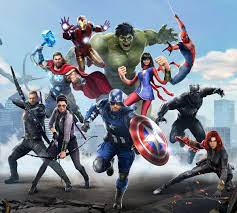
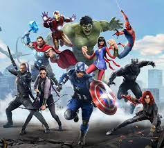

Iron Man is a superhero appearing in American comic books published by Marvel Comics. Co-created by writer and editor Stan Lee, developed by scripter Larry Lieber, and designed by artists Don Heck and Jack Kirby, the character first appeared in Tales of Suspense #39 (cover dated March 1963), and received his own title in Iron Man #1 (May 1968). In 1963, the character founded the Avengers superhero team with Thor, Ant-Man, Wasp and the Hulk. A wealthy American business magnate, playboy, philanthropist, inventor and ingenious scientist, Anthony Edward "Tony" Stark suffers a severe chest injury during a kidnapping. When his captors attempt to force him to build a weapon of mass destruction, he instead creates a mechanized suit of armor to save his life and escape captivity. Later, Stark develops his suit, adding weapons and other technological devices he designed through his company, Stark Industries. He uses the suit and successive versions to protect the world as Iron Man. Although at first concealing his true identity, Stark eventually publicly reveals himself to be Iron Man. Initially, Stan Lee used Iron Man to explore Cold War themes, particularly the role of American technology and industry in the fight against communism. Subsequent re-imaginings of Iron Man have shifted to contemporary matters.[1] Iron Man has headlined various comic book series. Throughout most of the character's publication history, he has been a founding member of the Avengers. Iron Man has been adapted for several animated television shows and films. In the Marvel Cinematic Universe, Tony Stark was portrayed by Robert Downey Jr. in the films Iron Man (2008), The Incredible Hulk (2008), Iron Man 2 (2010), The Avengers (2012), Iron Man 3 (2013), Avengers: Age of Ultron (2015), Captain America: Civil War (2016), Spider-Man: Homecoming (2017), Avengers: Infinity War (2018), and Avengers: Endgame (2019); while Mick Wingert voiced the character in the animated series What If...? (2021).